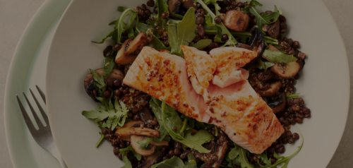

GRILLED SALMON WITH GARLIC MUSHROOM AND LENTIL SALAD

COOKING INSTRUCTIONS
Put the lentils into a large saucepan along with the bay leaf, thyme and stock (or water). Bring to the boil
over a medium-high heat, then reduce to a simmer. Simmer for 15–20 minutes until tender.
In the meantime, heat a large heavy-based frying pan over a medium-high heat and add the olive oil. Once hot,
add the mushrooms with a pinch of salt and cook in the pan for 6–8 minutes, stirring now and again, until soft and
lightly caramelized on the edges.
Add the chopped garlic and continue to cook for 2 minutes, then remove the pan from the heat.
Once the lentils are tender, drain well and discard the herbs. Put the lentils into a large mixing bowl and add
the mushrooms. Mix together gently to avoid breaking up the lentils too much.
To make the dressing, put all the ingredients into a clean jam jar with a pinch of salt and pepper. Close the
lid of the jar and shake until the dressing comes together and emulsifies.
Preheat the grill to high. Grill the salmon for 6–8 minutes to your liking.
Pour half the dressing over the warm lentils and toss gently to ensure everything is coated. Fold in the rocket,
place the salmon on top and pour over the remaining dressing. Serve immediately.